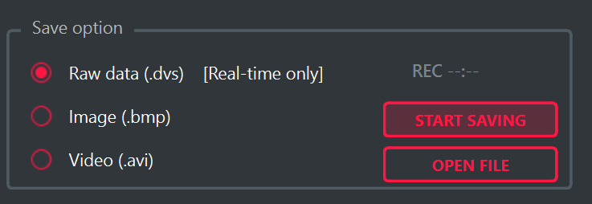
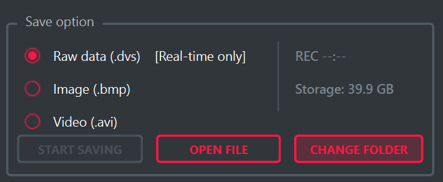

DVS 장시간 녹화 개선
이벤트 카메라 데이터셋을 촬영하기 전에, 원시 데이터를 오랫동안 기록할 수 있는 환경부터 확인했습니다. 직접 촬영 조건을 정하고 실험하면서, 녹화가 막히는 이유를 저장 속도와 용량, 프로그램 처리 방식으로 나누어 확인했습니다. 촬영 프로그램을 개선하고 부족한 저장장비를 요청한 뒤, 선임들과 수정 방향과 실험 결과를 공유하며 20여 분 동안 고속 프레임으로 녹화할 수 있는 환경을 만들어간 과정을 정리합니다.
1. 실험 조건
Viewer는 카메라가 보내는 데이터를 받아 화면에 보여주고 파일로 저장하는 촬영 프로그램이다.
데이터셋에는 화면에 표시된 영상뿐 아니라 밝기 변화의 위치와 시각이 담긴 이벤트 데이터가 필요하다.
따라서 .dvs 파일에 이벤트 데이터를 기록하고, 촬영 후 기록 시간과 데이터량을 확인하는 방식으로 실험을 설계했다.
녹화 시간, 센서 설정 속도, 감도, 저장장치를 함께 기록해 조건이 바뀌었을 때 결과를 비교할 수 있도록 했다.
촬영 대상은 계속 회전하는 선풍기로 정했다. 움직임이 지속되는 장면에서 화면 표시와 파일 저장을 동시에 실행해 데이터가 계속 들어오는 동안 Viewer와 저장장치가 처리량을 유지하는지 살펴봤다. 처음에는 센서를 1000 FPS와 높은 감도로 설정했다. 먼저 이 조건에서 발생한 저장 문제를 해결하고, 이후 더 높은 부하를 감당할 수 있는 수신 환경에서 2000 FPS로 실험을 확장했다.
2. 증상과 원인 구분
처음에는 15분 녹화를 목표로 했다. 약 6분 30초가 지나자 PC를 조작하기 어려울 정도로 응답이 느려졌고, USB를 분리한 뒤 Viewer와 시스템을 종료했다. 이후 파일을 분석해 보니 실제로 남은 구간은 약 2분 21초뿐이었다. 녹화 버튼을 누른 뒤 경과한 시간과 디스크에 기록된 데이터의 시간이 크게 벌어져 있었다.
응답 저하만으로 저장장치나 프로그램 중 하나를 원인으로 단정할 수는 없었다. 먼저 저장된 구간의 파일 크기와 기록 시간으로 초당 약 93MB의 데이터량을 계산했다. 같은 조건으로 15분을 촬영하려면 약 84GB의 공간이 필요했다. 이를 기준으로 저장 공간은 목표 시간만큼 충분한지, 쓰기 속도는 초당 데이터량을 감당하는지 나누어 확인했다. 이때는 1000 FPS로 녹화한 결과를 기준으로, 100MB/s를 넘는 지속 쓰기 여유가 필요하다고 판단했다. 이후에는 이 조건에서의 개선을 확인한 뒤 2000 FPS로 부하를 높여, 20분 동안 녹화가 유지되는지 검증했다.
프로그램에서는 수신한 데이터를 큐에 넣고 파일로 쓰는 과정을 따라갔다. 기존 큐에는 상한이 없어 쓰기 처리가 늦어지면 메모리 사용량도 계속 늘어날 수 있었다. 따라서 저장장치를 바꾸는 것과 별개로, 쓰기 효율을 높이고 대기 데이터의 증가를 제한하는 수정이 필요했다. 이후에는 저장 위치를 명확히 지정하고, 프로그램 개선과 저장장치 교체 후의 녹화 결과를 다시 확인했다.
3. 저장 UI 개선
저장 속도를 비교하려면 실제로 어느 장치에 파일을 쓰고 있는지부터 명확해야 했다.
기존 Viewer는 문서 폴더 아래의 정해진 위치에 저장했다. 다른 저장장치를 연결해도 바로 선택하기 어렵고,
녹화 화면에서는 남은 공간을 확인할 수 없었다. 그래서 CHANGE FOLDER 버튼으로 저장 폴더를 선택하고
다음 실행에도 그 위치를 기억하도록 수정했다. OPEN FILE도 선택한 폴더에서 저장 파일을 찾도록 맞췄다.
선택한 폴더에 작은 임시 파일을 써 보도록 해, 실제로 저장 가능한 위치인지 녹화 전에 확인했다. 화면에는 선택한 저장장치의 여유 공간을 표시하고, 녹화 중에는 폴더 변경을 막아 기록 도중 경로가 바뀌지 않게 했다.


4. 파일 쓰기 구조 개선
배치 쓰기와 처리량
장시간 녹화에서는 각 데이터를 즉시 파일에 넘기는 지연보다, 들어오는 양을 계속 기록할 수 있는 지속 처리량이 중요하다. 작은 묶음을 자주 쓰면 호출과 버퍼 정리 비용도 반복된다. 여러 데이터를 모아 쓰는 배치 쓰기는 이 비용을 더 많은 데이터에 나누어 부담시키는 방식이다. 이번 수정에서는 한 번에 쓰는 단위를 1MiB에서 8MiB로 늘려 호출 빈도를 줄였다. 같은 데이터량이라면 쓰기 호출 횟수는 약 8분의 1이 되지만, 실제 성능은 저장장치와 다른 처리 비용에도 영향을 받는다.
매 묶음마다 수행하던 fflush는 누적 128MiB마다 수행하도록 바꿨다.
자주 비우는 대신 일정량을 모아 운영체제에 전달해 처리량을 확보하는 선택이었다.
다만 묶음을 크게 하면 데이터가 버퍼에 머무는 시간도 길어질 수 있으므로, 크기를 무조건 늘리는 것이 목표는 아니다.
녹화 중에는 반복 처리 비용을 줄이고, 정상 종료할 때는 남은 데이터를 모두 쓰도록 두 동작을 함께 설계했다.
| 확인한 부분 | 기존 동작 | 반영한 변경 |
|---|---|---|
| 쓰기 묶음 | 1MiB | 8MiB로 확대 |
| Flush | 묶음을 쓸 때마다 수행 | 누적 128MiB마다 수행, 종료 시 잔여 데이터 처리 |
| 저장 큐 | 용량 상한 없이 증가 | 전체 최대 1GiB, 통합 스테레오는 스트림당 512MiB |
| 쓰기 오류 | errno 중심 확인 | fwrite 반환값도 검사해 부분 쓰기와 공간 부족 감지 |
다음으로 수신과 저장을 생산자–소비자 구조로 보았다. 수신 측은 데이터를 계속 생산하고, 파일 쓰기 측은 이를 소비한다. 장시간 유지되려면 평균 쓰기 처리량이 평균 입력량보다 충분히 커야 한다. 평균 속도가 같더라도 디스크가 잠시 느려질 때 쌓인 데이터를 줄일 여유가 없기 때문이다. 큐에 필요한 크기는 이런 일시적인 입력·출력 차이가 얼마나 오래 누적되는지에 따라 달라진다. 이 관점에서 메모리는 짧은 속도 변동을 흡수하는 수단이고, 지속적인 처리량 부족을 해결하는 수단은 아니다.
저장이 밀릴 때 프로그램이 메모리를 끝없이 사용하지 않도록, 저장 대기 데이터의 최대 크기를 정했다. 이 한도에 도달하면 녹화를 계속하는 대신 새로운 데이터를 저장 큐에 넣는 것을 멈춘다. 그다음 이미 큐에 들어온 데이터를 파일에 쓰고 파일을 닫도록 했다. 즉, 데이터가 쌓이는 상황을 방치하지 않고 정해진 메모리 범위 안에서 녹화를 종료하는 방식이다.
남은 데이터 처리 후 종료
녹화 중지 버튼을 누른 시점에도 아직 파일에 쓰지 못한 데이터가 큐에 남아 있을 수 있다. 이때 저장 작업까지 바로 멈추면 마지막에 받은 데이터가 기록되지 않는다. 그래서 종료를 두 단계로 나눴다. 먼저 새 데이터를 저장 큐에 넣지 않도록 하고, 별도로 동작하는 저장 스레드는 큐에 남은 데이터를 마저 기록한 뒤 끝내도록 했다.
이를 코드로 구분한 것이 ‘녹화 중’ 상태와 ‘남은 데이터 처리 중’ 상태이다.
중지를 요청하는 쪽과 실제 파일을 쓰는 쪽이 서로 다른 스레드이므로,
두 상태에는 일반 bool 대신 std::atomic<bool>을 사용했다.
한쪽에서 값을 바꾸는 동안 다른 쪽이 읽어도 그 상태값을 안전하게 주고받기 위한 선택이다.
큐 자체를 수정하는 작업은 기존 잠금으로 보호했다.
// 저장 스레드가 확인하는 두 상태
std::atomic<bool> mPacketSaveToFile;
std::atomic<bool> mDrainBeforeStop;
// 중지를 눌러도 남은 데이터를 처리하는 동안은 계속 실행
while (save->mPacketSaveToFile.load() ||
save->mDrainBeforeStop.load()) {
// 큐에서 데이터를 가져와 파일에 기록
// 종료 요청 이후 큐가 비면 반복 종료
}
핵심 조건만 남긴 위 코드에서 ||는 둘 중 하나라도 참이면 계속 처리한다는 뜻이다.
‘녹화 중’ 상태가 꺼져도 ‘남은 데이터 처리 중’이면 저장 작업을 이어가고, 큐가 비면 반복을 끝낸다.
이렇게 중지 요청과 저장 완료를 구분해 마지막 데이터까지 정리한 뒤 파일을 닫도록 했다.
다만 디스크 쓰기 자체가 실패한 경우에는 계속 기록할 수 없으므로 오류를 반환하고 처리를 멈춘다.
포화 알림과 오류 처리
큐가 더 이상 데이터를 받을 수 없으면 SDK가 전용 콜백을 호출하고,
Viewer에서는 Qt signal/slot으로 알림을 받아 녹화 중단을 요청하도록 연결했다.
중단 요청이 반복되지 않도록 상태 플래그를 두고, QTimer::singleShot에
[this] 람다를 전달해 종료와 알림 처리를 예약했다.
단순히 상태 확인 횟수를 줄이는 수정이 아니라, 포화가 발생한 지점에서 알림을 전달하고 종료 순서를 제어하는 구조로 정리한 것이다.
파일 쓰기 실패는 큐 포화와 따로 판단했다. 기존에는 errno 중심으로 확인했지만,
수정 후에는 fwrite가 반환하는 기록 항목 수를 요청한 항목 수와 먼저 비교했다.
fwrite의 반환값은 바이트 수가 아니라 크기가 size인 항목을 몇 개 썼는지이므로,
비교 대상은 size가 아닌 count이다.
// 입력 검증과 세부 오류 분기를 생략한 핵심 비교
errno = 0;
const size_t itemsWritten = fwrite(buff, size, count, file);
if (itemsWritten != static_cast<size_t>(count)) {
// errno를 확인해 공간 부족과 기타 쓰기 실패를 구분
return ERR_FILE_WRITE_FAIL;
}
실제 구현에서는 공간 부족과 일반 쓰기 실패를 구분해 상위 호출자에게 반환했다.
static_cast<size_t>는 양수로 검증한 요청 개수를 반환값과 같은 자료형으로 비교하기 위해 사용했다.
이렇게 반환값으로 성공 여부를 판단하고 오류 코드로 원인을 구분하면서,
일부만 기록된 상황이 정상 저장으로 처리되지 않도록 했다.
5. 저장 조건 확인
프로그램 수정 후에는 실제 녹화를 다시 진행해, 저장장치가 초당 데이터량을 지속적으로 기록할 수 있는지 확인했다. 짧은 순간의 최고 속도보다 촬영 내내 유지되는 쓰기 속도를 기준으로 삼았다. 이어서 초당 데이터량에 목표 녹화 시간을 곱해 필요한 공간을 계산하고, 선택한 저장 위치에 충분한 여유가 있는지 확인했다.
쓰기 속도는 데이터를 제때 기록할 수 있는지를, 용량은 얼마나 오래 기록할 수 있는지를 결정한다. 확인 결과, 기존 저장장치는 장시간 고속 녹화에 필요한 쓰기 속도와 저장 용량이 부족했다. 측정 결과와 목표 촬영 시간을 근거로 장비 변경을 요청하고, 회사에서 보유한 더 빠르고 용량이 큰 저장장치로 교체했다. 교체 후에는 지속 쓰기 속도와 남은 공간을 다시 확인하고, 촬영 속도와 시간을 늘려 다음 검증을 진행했다.
6. 고부하 조건 검증
다음에는 더 높은 FPS와 데이터량을 감당할 수 있는 수신 환경을 준비하고 촬영 부하를 높였다. 이 과정에서 설정값은 정상적으로 입력됐지만 실제 데이터가 거의 들어오지 않는 경우가 있었다. 저장 프로그램을 다시 수정하기 전에 카메라의 출력 설정과 실제 수신량부터 비교했다.
설정 파일에는 FPS뿐 아니라 데이터를 내보내는 신호 속도와 전송 묶음의 크기도 포함되어 있었다. 사용 중인 하드웨어에 맞는 전송 조건을 유지하면서 촬영 속도를 조정하고, 실제 데이터가 들어오는지 확인했다. 높은 FPS를 설정하는 것만으로 고부하 검증이 되는 것은 아니며, 그 조건에서 수신과 저장이 함께 동작해야 했다.
또한 설정 화면의 FPS만으로 촬영 상태를 판단하지 않았다. 감도와 장면에 따라 초당 데이터량이 달라지고, 센서 출력부터 USB 수신과 디스크 쓰기까지 각 구간이 그 양을 처리해야 한다. 따라서 카메라 설정값과 실제 저장 처리량을 나누어 보고, 최종 녹화는 2000 FPS와 기본 감도 조건으로 진행했다.
7. 20분 녹화 결과
저장 속도와 용량, 수신 설정을 확인한 환경에서 선풍기를 20분 동안 촬영했다. 실시간 미리보기와 원시 저장을 함께 켠 상태에서 녹화를 마쳤고, 약 380.98GB의 파일이 생성됐다. 촬영을 마친 뒤 파일 크기와 기록 시간으로 평균 저장 속도를 확인했다.
| 항목 | 확인 결과 |
|---|---|
| 카메라 조건 | 설정 2000 FPS, 기본 감도 |
| 녹화 시간 | 20분 |
| 파일 크기 | 380.98GB, 약 354.81GiB |
| 평균 저장 속도 | 317.48MB/s, 약 2.54Gbit/s |
초기 1000 FPS 실험에서는 약 93MB/s의 데이터량을 확인했고, 최종 실험에서는 2000 FPS로 높여 평균 317.48MB/s 조건에서 20분 녹화를 마쳤다. 짧고 낮은 부하의 촬영에서 동작하는지만 보는 대신, 더 많은 데이터가 오래 들어오는 조건으로 검증 범위를 넓혀 장시간 녹화의 안정성을 확인했다. 최종 촬영 조건에서는 초당 약 318MB를 지속적으로 기록하면서 일시적인 쓰기 지연도 따라잡을 여유가 필요했다. 이후 데이터셋 촬영에 필요한 저장 용량과 장비 구성을 이 결과에 맞춰 정리했다.
8. 빌드와 협업
수정한 내용을 다른 사람도 실행해 볼 수 있도록 프로그램을 빌드했다. 저장 기능은 화면뿐 아니라 카메라 데이터를 받는 공통 코드와도 연결되어 있어, 기반 라이브러리부터 Viewer까지 의존 순서에 맞춰 빌드했다. 공통 라이브러리 수정이 최종 실행파일에 반영되려면 관련 모듈을 함께 갱신해야 한다는 의존 관계도 확인했다. 지원하는 두 운영체제에서 빌드와 연결을 확인하고, 촬영에 사용하는 PC에서는 실제 카메라를 연결해 저장 동작을 다시 점검했다.
코드 변경은 PR로 보내 선임들과 수정 이유와 영향을 검토했다. 직접 겪은 녹화 문제와 UI 전후 화면, 개선 후 촬영 결과를 함께 전달해 왜 이런 수정이 필요했는지 설명했다. 검토 과정에서는 변경을 더 작은 단위로 나누면 확인하기 쉽다는 의견도 받았다. 이를 통해 기능을 구현하는 것뿐 아니라, 다른 사람이 이해하고 검토하기 좋은 범위로 작업을 정리하는 방법도 배웠다.
실험에서 확인한 수치를 바탕으로 필요한 하드웨어를 요청하고, 프로그램 수정은 선임들의 검토를 거쳐 반영했다. 혼자 촬영 결과를 확인하는 데서 끝내지 않고, 어떤 문제가 남아 있고 다음에 무엇을 확인할지 공유하며 작업을 이어갔다.
9. 설계 관점 정리
이번 작업에서는 저장 문제를 하나의 성능 수치로 판단하지 않고, 지속 처리량·일시적인 지연·총용량으로 나누어 보게 됐다. 묶음 쓰기는 반복 처리 비용을 줄이고, 제한된 큐는 일시적인 속도 차이를 흡수하며, 저장 용량은 가능한 촬영 시간을 결정한다. 각 요소가 해결하는 문제가 다르므로 프로그램 최적화와 장비 교체도 각각의 근거를 가지고 진행해야 했다.
직접 녹화한 결과로 필요한 속도와 용량을 계산하고, 부족한 장비를 요청한 뒤 다시 촬영해 조건을 확인했다. 코드에서는 정상적으로 기록되는 경우뿐 아니라 처리가 밀리거나 쓰기가 실패했을 때의 동작도 함께 수정했다. C++ 구현에서는 공유 플래그의 원자적 접근, 큐의 잠금, 콜백을 통한 오류 전달이 서로 다른 역할을 한다는 점을 함께 정리했다. 이런 실험 결과와 수정 근거를 선임들과 공유하면서, 장시간 동작하는 프로그램은 처리량과 자원 한계, 스레드 간 상태 전달과 종료 순서를 함께 설계해야 한다는 관점을 익혔다.
다음 촬영 시 확인할 사항
이번 실험을 바탕으로, 이후 촬영 조건을 바꿀 때는 다음 항목을 먼저 확인하려 한다.
- 장면·감도·FPS 변경 시 초당 데이터량을 다시 측정하고, 지속 쓰기 속도에 여유가 있는지 확인한다.
- 예상 데이터량과 목표 촬영 시간으로 필요한 용량을 계산하고, 실제 저장 위치의 남은 공간을 확인한다.
- 프로그램 변경 시 정상 녹화뿐 아니라 저장 지연·쓰기 실패·종료 처리도 확인하고, 결과를 선임들과 공유한다.